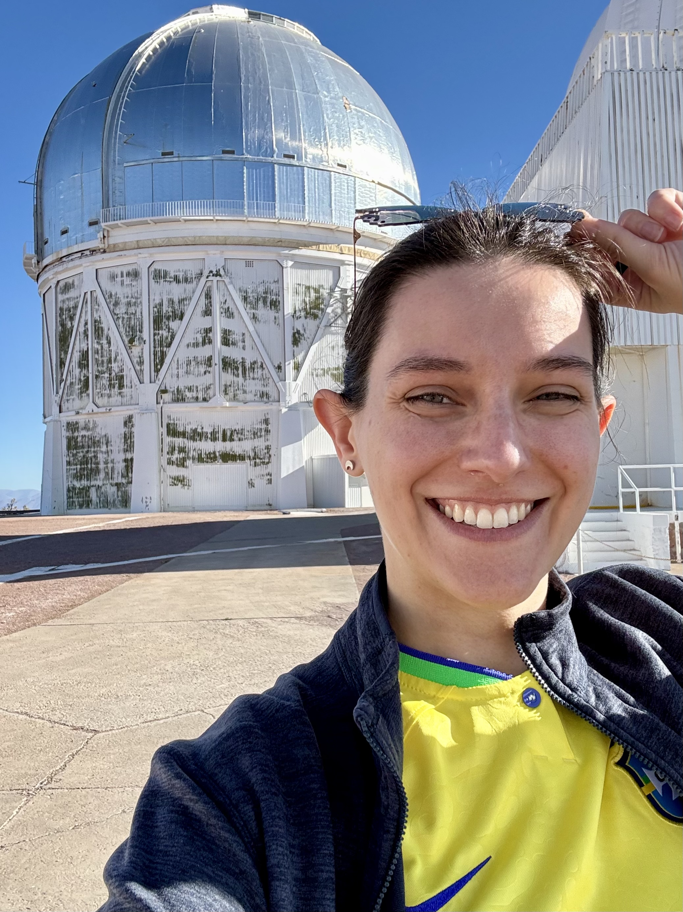
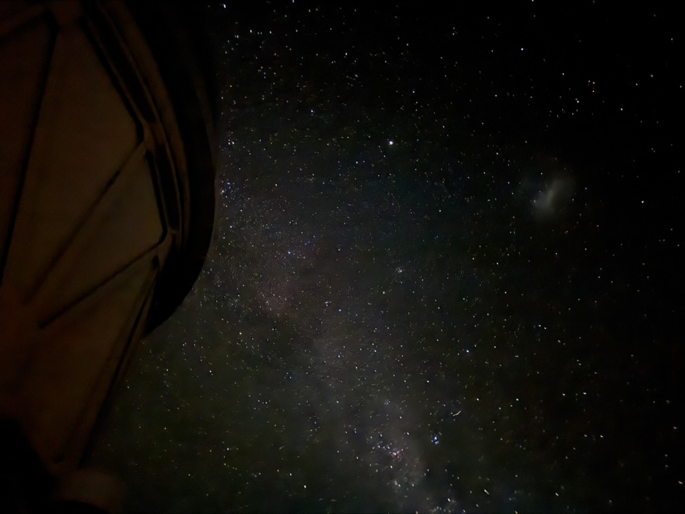
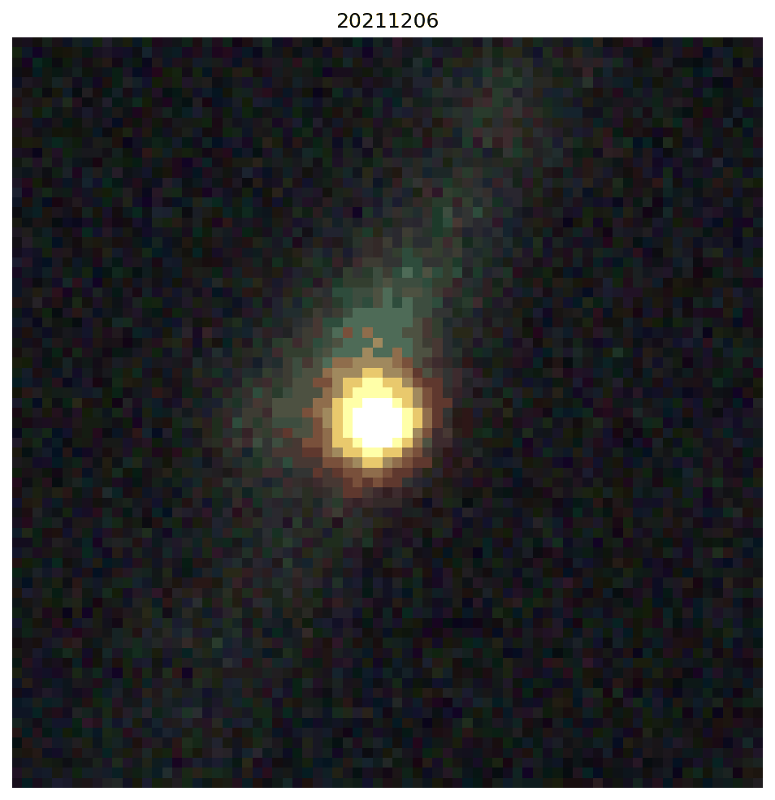
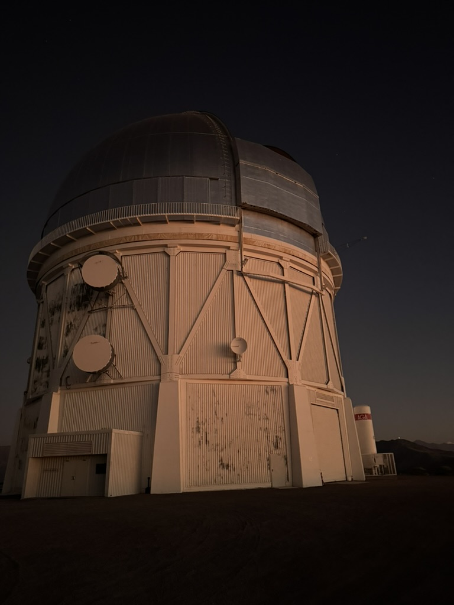
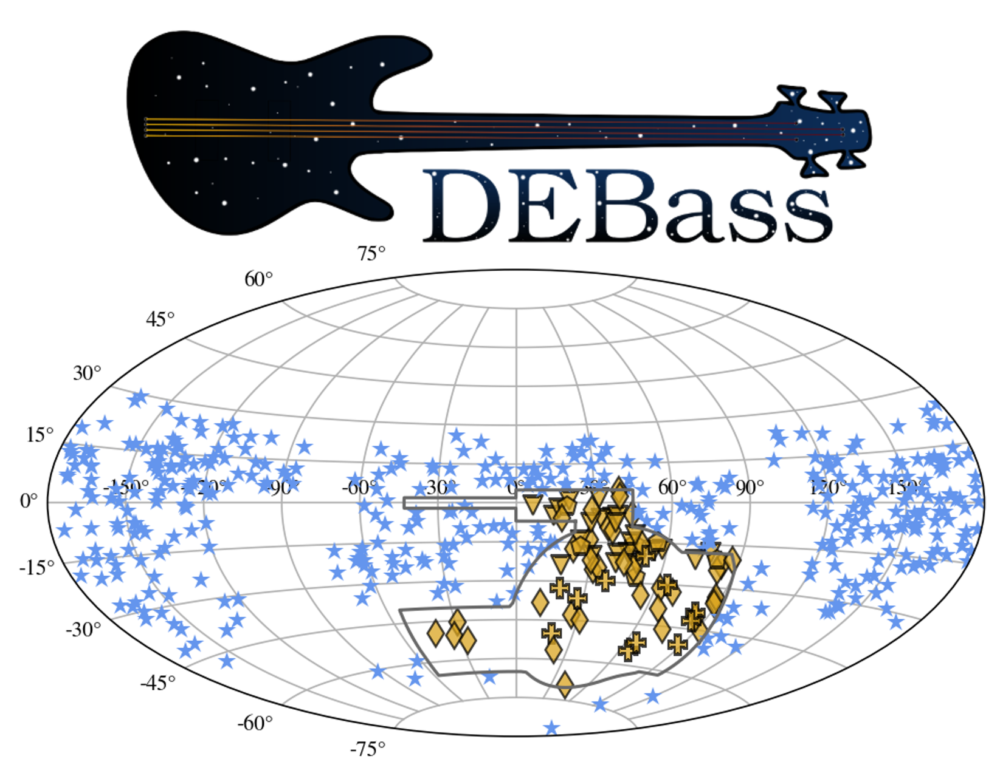

DR. NORA FIELD SHERMAN
Astrophysics • Computation • Discovery
Explore Research
I work at the gates of the stellar graveyard using dead and dying stars to probe the mysteries of our expanding Universe. My work uses big telescopes and even bigger data along with advanced computational methods to place limits on the physical properties of electromagnetic transients and constrain cosmological models, all in an effort to better understand Dark Energy.

FEATURED RESEARCH
The Dark Energy Bedrock All-Sky Supernova program (DEBASS) images the Southern sky to create one of the largest, most uniformly calibrated low-redshift Type Ia supernova (SN Ia) surveys to-date in an effort to overcome systematics present in leading low+high redshift cosmological constraints and isolate novel behaviors of our Universe. My work on this project includes collection (both onsite and remote observing using the Dark Energy Camera in Chile), reduction, and analysis of our data in order to study SN Ia, the local Universe, and Dark Energy.
CURRENT RESEARCH

What standarizable stellar death can tell us about the Universe.

Using explosive collisions of dead stars to measure the Universe.
SELECTED WORK

The Astrophysical Journal · 2026First results of the DEBASS progam, consisting of 77 low-redshift SNe Ia imaged using the Dark Energy Camera.
JOURNEY
Boston University, Institute for Astrophysical Research
University of Michigan
Improving the Discovery Power of the Dark Energy Survey Gravitational Wave Program in Its Fourth Observing Campaign
University of Illinois at Urbana-Champaign
Research, outreach, education, and art.